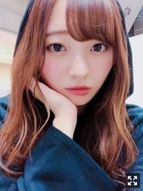
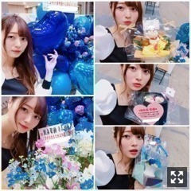
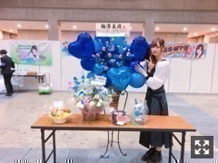
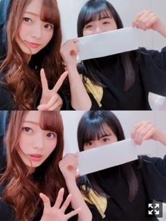
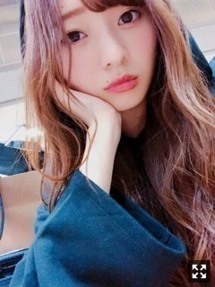

だんだん増える光の数
みなさまこんにちは！！
乃木坂46 ３期生の
梅澤美波です！！

握手会のときのわし
最近は毎日色んなことをしてて
とても充実してます〜！
もうすぐ４６時間TVも！！
未知の世界だけどすごくわくわくしてます！
どんな感じなんやろ〜
どんな企画に出るんやろ〜
って気持ちは高ぶるばかりです（笑）
きっともう環境が変わるから
ぜひたくさんの方に見ていただきたいなあ
初富士急楽しみだな〜！
１７日の個別握手会@東京ビッグサイト
お越しくださった皆様ありがとうございました！！
会いに来てくださった皆様に
感謝を込めて握手しました☺︎
このシングルは
今までより初めましての方がすごく多くて
とても嬉しいと思うのと同時に
また来たいって思ってもらえるような
そんな握手会にしよう！と心がけてました∠( ˙-˙ )／
どうだったかな〜( .. )
久しぶりの握手会で
とても楽しかった〜！
笑わせてくれたり
真面目に語ってくれたり
たくさんの笑顔をありがとう！
私のために泣いてくれる方とか
嬉しくて胸がギュッとなります、
いつも本当にありがとう。☺︎

お花〜！！
素敵！きゃわいい〜(；；)
いつもありがとうございます！
毎回毎回握手会のたびに
デザインとか色とかお花とか
たくさん悩んできっと送ってくれてるんだろうな〜って思うと
嬉しくてたまらないです。
癒されます、レーンに行ってお花があると
とてもテンションあがるの☺︎
いつも可愛いのありがとう！
幸せです！

ぴーす！！
これは５部の服〜！
トップスもスカートもめちゃお気に入りのやつ！
今回も私服すべて変えて楽しみました〜！
１番好評だったのは
黒のパーカーに
デニムショートパンツにかな〜
フード被っていつもと違う感じにした！
テーマは家感◎
好評だったのでまた近々フードかぶってやります〜☺︎
なんかね、
就活で、受験で、色んな事情で、
もう来れないとかいう方が今回すごい多くて
あ、お別れの季節かって思って
今がそういう時期なんだなって思って
すっごい寂しくてね、（笑）
今までたくさん会いに来てくれてた時間って
物凄く長くて覚えるのにも時間がかかったり
積み上げてくのは時間がかかるのに
お別れの挨拶は一瞬で
そんな短い時間でお別れできないよって
必死にありがとう！って言うんだけど
伝えられたかなあと不安になる( .. )
また息抜きにでも会いに来てね！
みんながんばれ〜！
梅澤もがんばるからね！
明日は京都で１９thラスト個別握手会です！
楽しんでいこー！
１９thラストの握手会は
３／３１にあるインテックス大阪での全国握手会です！
まっとるよ〜∠( ˙-˙ )／

も も こ
久しぶりの梅桃だよ〜！
お待ちかねでしょみんな！
（笑）
しばらく会えてない日が続いてたんだけど
この前２日連続で会えたの( ¨̮ )
嬉しかったよ〜
いっぱいお話したよ〜
ももこがんばれ！
私もがんばるぜ！
焼肉今度連れていくんだ〜
私が勝手に決めたんだけどね（笑）
そして！遂に！
モバメが始まります〜！ぱちぱち
お待たせしました〜！
早くやりたかったんだ〜
やっとです！！嬉しい！
モバメまだ始まらないの？と
聞かれることが多かったので
やっとお伝えできて嬉しいです◎！
モバメで載せる用の写真とか
モバメだけのシリーズ物とか、、
色々考えております！
普段の自撮りっぽくない自撮りとか
今まで載せられなかったオフショットとか
あんな写真やこんな写真や
モバメならではのものにしたいなって思ってる！
つぶやきみたいに
ちょっとしたことでもね☺︎
皆様が見てちょっとでも元気出たり
毎日の楽しみとか癒しとか
少しでもパワーになれたらいいなっ
受付始まっているみたいなので
梅澤気になっちゃうな〜！
なんて方はぜひ∠( ˙-˙ )／
なんか気づけばもう３月も後半戦突入してて
時間の流れは早いな〜って
びっくりしてます
目の前のことに必死だから
一歩下がって見たときに
周りの環境に驚くことがよくあります
見渡すことも大切ね( ˙-˙ )౨
最近服買えてないから
ネットで見て我慢してます、、
欲しい服リストがフォルダにあります〜
店舗に行って買うのが１番良いからね◎
せっかくの春だし
色んなカラーの服チェックしてみよっと
そんなこんなで最近は
皆様に早く見せたい〜！と思う写真が
募っていくばかりであります、、
楽しみだな〜わくわくします！
よし！今日はここまで！
頑張ってきます〜

またなっ
ゆめであおな〜
色々考える夜が好きです、
色んなことを思い出す外の匂いも好きです、
どんな事を感じても私は私でいられたらいいなって！がんばる！
Original：https://www.nogizaka46.com/s/n46/diary/detail/43700?ima=4955&cd=MEMBER